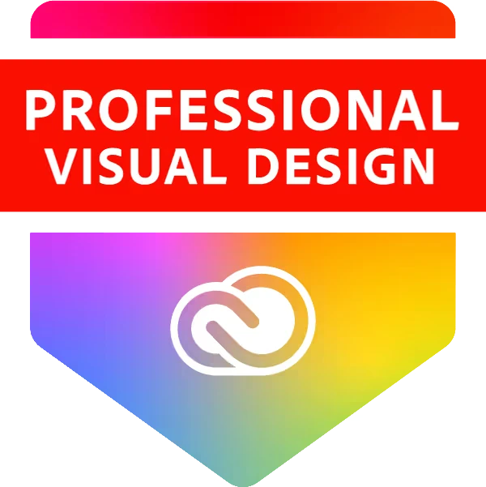

Hello, I'm Matan Kidrony, but you can call me Kid. I'm a Senior Brand & Product Designer. I help teams make clear design decisions, from the first sketch through every growth stage.
My journey began at a digital agency, where I got hooked on the meeting point of technology, human behavior and data. Since then I've designed mobile apps, web platforms and brand identities, often as the only designer in the room.
Over the years I've worked hands-on with more than 100 startups, founders and managers: bringing order to design chaos, aligning product and brand, and helping teams move faster with confidence. Always focused on clarity, momentum and decisions, not endless debates.
- 15+years designing
- 100+startups & founders
BrandIdentity, visual language, guidelines, marketing
ProductResearch, UX, UI, prototyping, handoff
SystemsDesign systems, components, motion
Certifications
